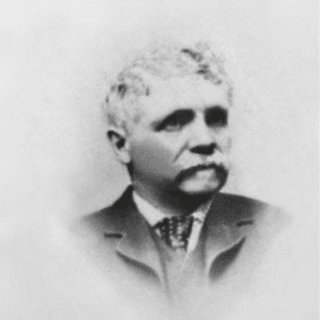

The heritage of IWC is deeply rooted in American pioneering spirit and entrepreneurship. Florentine Ariosto Jones, a watchmaker from Boston, founds the International Watch Company in 1868. He draws on the help of eminently qualified Swiss watchmakers, modern technology, and hydropower sourced from the nearby River Rhine to manufacture pocket watch movements of the highest possible quality. The Rauschenbachs, an industrialist family from Schaffhausen, take over the company following Jones’ return to the United States. During its early years, IWC produces pocket watches with a digital “Pallweber” display, as well as wristwatches for women and men.
1868, FLORENTINE ARIOSTO JONES (1841-1916), A WATCHMAKER FROM BOSTON, MASSACHUSETTS, FOUNDS THE INTERNATIONAL WATCH COMPANY IN SCHAFFHAUSEN. HIS AIM: TO PRODUCE HIGH- QUALITY POCKET WATCHES FOR THE AMERICAN MARKET.
 BIG PILOT'S WATCH AMG G 63 18 ct Armor Gold® case, Automatic, 46.2 mm $ 8,500
BIG PILOT'S WATCH AMG G 63 18 ct Armor Gold® case, Automatic, 46.2 mm $ 8,500 PILOT'S WATCH MARK XX Stainless steel case, Automatic, 40.0 mm $ 6,150
PILOT'S WATCH MARK XX Stainless steel case, Automatic, 40.0 mm $ 6,150 PILOT'S WATCH CHRONOGRAPH 41 TOP GUN OCEANA Ceramic case, Automatic, 41.9 mm $ 11,700
PILOT'S WATCH CHRONOGRAPH 41 TOP GUN OCEANA Ceramic case, Automatic, 41.9 mm $ 11,700